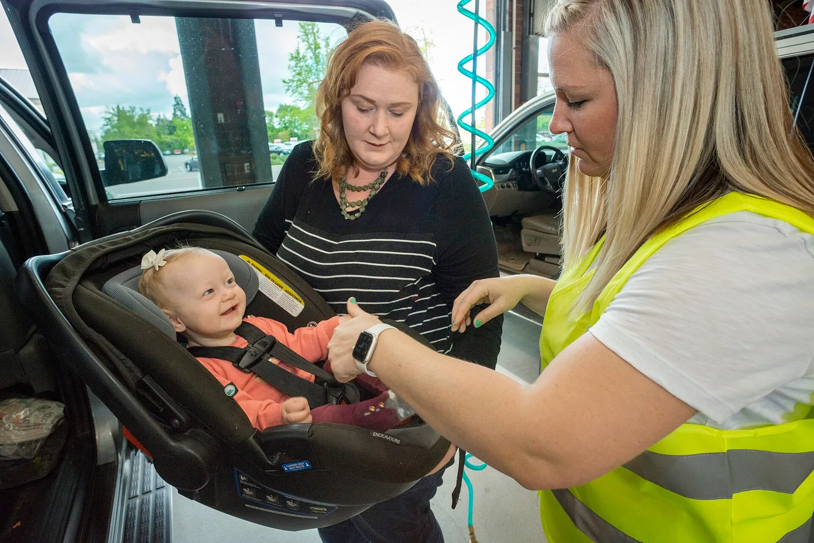
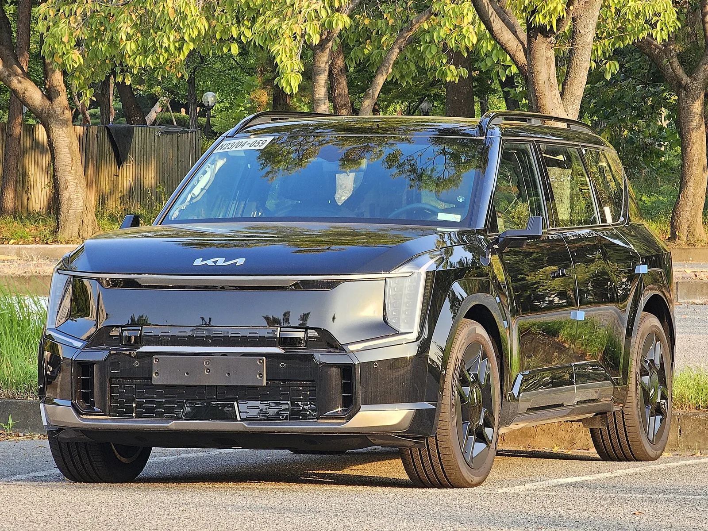
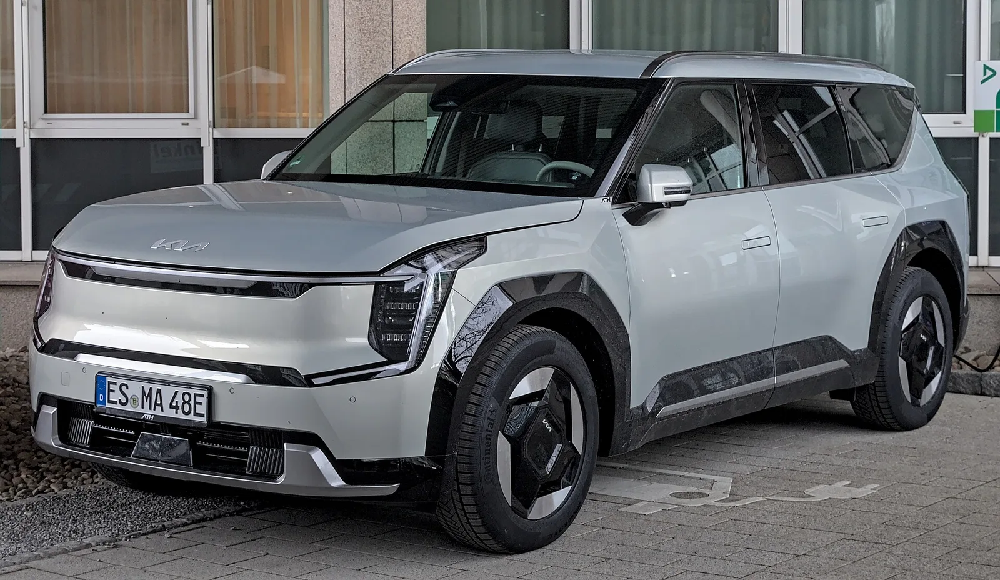

▲ 기아 EV9. 미국에서 2025~2026년형 2만 1,290대가 리콜 대상에 올랐다 ⓒ Wikimedia Commons
에어백 리콜은 대개 '안 터진다'는 이야기입니다. 이번은 반대쪽입니다.
기아가 미국에서 EV9 2만 1,290대를 리콜합니다. 조수석에 어린이나 카시트가 앉아 있는데도 에어백이 꺼지지 않을 수 있다는 것이 이유입니다.
1. 무엇이 잘못됐나
문제의 부품은 조수석 탑승자 감지 시스템의 매트 블래더 튜브입니다. 이름이 낯설지만 역할은 단순합니다.
조수석 방석 안에는 액체나 기체가 든 얇은 주머니(블래더)가 깔려 있습니다. 사람이 앉으면 눌린 압력이 튜브를 타고 센서로 전달되고, 시스템은 그 압력으로 탑승자의 무게를 추정합니다.
이 튜브가 시트를 가장 높은 위치로 조절했을 때 눌리거나 끼일 수 있다는 것이 이번 결함입니다. 원인은 공급업체의 부적절한 튜브 배선입니다.
📍 왜 무게를 재는가
조수석 에어백은 성인 기준으로 설계됩니다. 전개 속도가 시속 300km에 이르기 때문에, 체구가 작은 어린이나 후향 카시트에 대해서는 터지지 않는 편이 더 안전합니다.
그래서 탑승자 감지 시스템이 무게를 읽어 일정 기준 미만이면 에어백을 자동으로 비활성화합니다. 이 판단의 입력값이 눌린 튜브 때문에 왜곡되면, 꺼져야 할 에어백이 켜진 상태로 남습니다.

▲ 조수석 에어백은 성인 기준으로 설계된다. 어린이·카시트 탑승 시에는 비활성화되는 것이 안전하다 ⓒ Wikimedia Commons
2. 2만 1,290대 중 1,277대
리콜 대수는 2만 1,290대지만, 기아가 실제 결함이 있을 것으로 예상한 차량은 약 6%입니다. 대수로는 1,277대가량입니다.
| 항목 | 내용 |
|---|---|
| 대상 대수 | 2만 1,290대 |
| 연식 | 2025~2026년형 |
| 결함 예상 비율 | 약 6% (약 1,277대) |
| 원인 | 공급업체의 부적절한 튜브 배선 |
| 규제 기관 | 미국 도로교통안전국(NHTSA) |
결함 확률이 낮아도 대상 범위를 넓게 잡는 것은 안전 관련 리콜의 일반적인 방식입니다. 어느 차에 문제가 있는지 사전에 특정할 수 없기 때문에, 생산 구간 전체를 불러 점검합니다.
3. 차가 먼저 신호를 보냅니다
이 결함은 증상이 겉으로 드러나는 편입니다. 두 가지 징후가 제시됐습니다.
| 징후 | 내용 |
|---|---|
| 경고등 | 계기판 에어백 경고등 점등 |
| 경고음 | 조수석에 사람이 없는데도 안전벨트 착용 경고 작동 |
빈 조수석에서 벨트 경고가 울린다면 시스템이 그 자리에 누군가 앉아 있다고 잘못 판단하고 있다는 뜻입니다. 튜브가 눌려 압력이 왜곡됐을 때 나타나는 전형적인 현상입니다.

▲ EV9은 3열 대형 전기 SUV로, 가족 단위 수요가 큰 차종이다 ⓒ Wikimedia Commons
4. 어떻게 고치나
조치는 두 단계입니다. 먼저 매트 블래더 튜브의 배선 상태를 점검하고, 문제가 확인되면 해당 부품과 시트 커버 어셈블리를 새 것으로 교체합니다.
시트 커버까지 함께 가는 이유는 튜브가 방석 내부에 자리 잡은 부품이기 때문입니다. 커버를 분리하지 않고는 접근이 어렵습니다. 작업 시간이 짧지 않을 가능성이 있습니다.
소유자 통보는 2026년 10월 20일경 우편으로 시작됩니다. 대상 차대번호(VIN)는 9월 4일부터 NHTSA 리콜 사이트에서 조회할 수 있습니다.
5. 국내 물량은 어떻게 되나
이번 리콜은 미국 시장 대상입니다. 국내 판매분의 포함 여부는 별도 공고를 확인해야 합니다.
다만 원인이 공급업체의 배선 작업이라는 점은 참고할 만합니다. 부품이 같은 라인에서 공급됐다면 시장을 가리지 않고 영향이 있을 수 있고, 특정 생산 구간에 한정된 문제라면 그 구간의 차량만 해당합니다.
📍 내 차가 대상인지 확인하는 법
국내 차량은 자동차리콜센터에서 차량번호 또는 차대번호로 조회할 수 있습니다. 제작사 공고와 국토교통부 리콜 정보가 함께 확인됩니다.
6. EV9에게는 어떤 의미인가
EV9은 기아의 대형 3열 전기 SUV이며, 북미에서 브랜드 이미지를 끌어올리는 역할을 맡고 있습니다. 그만큼 가족 단위 구매 비중이 높습니다.
결함 내용이 어린이 안전과 직결된다는 점에서 대수 이상의 무게를 갖습니다. 실제 결함 예상이 1,277대에 그치더라도, 대상 차주 입장에서는 통보를 기다릴 이유가 없습니다.

▲ EV9 후면. 각진 형태로 3열 헤드룸과 적재 공간을 확보했다 ⓒ Wikimedia Commons
7. 정리
기아가 미국에서 2025~2026년형 EV9 2만 1,290대를 리콜합니다. 조수석 탑승자 감지 시스템의 매트 블래더 튜브가 시트를 가장 높은 위치로 올렸을 때 눌리거나 끼일 수 있는 것이 원인입니다.
이 경우 어린이나 카시트가 탑승해도 조수석 에어백이 비활성화되지 않을 수 있습니다. 실제 결함 예상 차량은 전체의 약 6%인 1,277대가량입니다.
징후는 에어백 경고등 점등과 빈 조수석에서의 안전벨트 경고입니다. 조치는 튜브 배선 점검 후 부품과 시트 커버 어셈블리 교체이며, 소유자 통보는 2026년 10월 20일경 시작되며, 대상 차대번호는 9월 4일부터 NHTSA 사이트에서 조회할 수 있습니다.